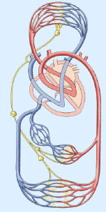

Herz- und Kreislauferkrankungen treten häufig zusammen mit Erkrankungen des Stoffwechsels auf oder werden durch diese verursacht. Treffen mehrere Erkrankungen zusammen auf, spricht man von einem "Syndrom". Typische "Wohlstandskrankheiten" werden so zu dem so genannten "Wohlstandssyndrom" ("metabolischen Syndrom") zusammengefasst. Dabei handelt es sich um:
Übergewicht
Fettstoffwechselstörung
Erhöhte Harnsäure/Gicht
Bluthochdruck
Zuckerstoffwechselstörung/Zuckerkrankheit
Während früher viele Krankheiten durch Mangelernährung und körperliche Überlastung verursacht wurden, haben wir heute das Problem

Über Herz, Lunge, große Schlagadern und schließlich die dünnsten Blutgefäße wird jede kleinste Funktionseinheit unseres Körpers (Körperzelle) mit Energie-, Aufbau- und Informationsstoffen versorgt. Stoffwechselprodukte werden abtransportiert und umverteilt oder ausgeschieden.